Bereich mit Namen
Named-Range
Seit Origin 2022 können Sie eine Bereichsvariable definieren, indem sie direkt eine einzelne Zelle oder (einen Teil von) eine Spalte im Arbeitsblatt benennen. Der benannte Bereich kann verwendet werden, um auf eine Zelle/Spalte in X-Funktionen, Formel für Werte setzen, Analysevorlagen, LabTalk-Skripts etc. zu verweisen.
Seit Origin 2022b verwenden Sie die Werte benannter Bereiche als die X-Werte für "Von" und "Bis", Anfangsparameterwerte, untere und obere Schranken und feste Parameterwerte und in den Dialogen der linearen Anpassung, nichtlinearen Anpassung (NLFit), polynomiellen Anpassung und multiplen linearen Regression.
Einen Bereich definieren
Es gibt mehrere Stellen auf der Origin-Benutzeroberfläche, an denen Sie die Möglichkeit haben, einen Bereich mit Name zu definieren.
Mit Menü Name definieren
- Markieren Sie eine einzelne Zelle oder Spalte im Arbeitsblatt.
- Wählen Sie im Menü Daten: Name definieren (Strg+L).
Der Dialog Neuer Name wird geöffnet.
- 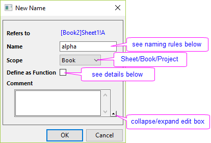
| Name |
Geben Sie einen aussagekräftigen Namen für die Bereichsvariable ein. Vermeiden Sie, etwas wie "AAA1" zu verwenden, das leicht mit der vereinfachten Zellennotation (SCN) verwechselt werden kann. Benennungsregeln:
- Beginnt mit einem Buchstaben.
- Mindestens 4 Zeichen.
- Leerzeichen oder Sonderzeichen sind nicht zugelassen.
- Berücksichtigt keine Groß-/Kleinschreibung.
|
| Umfang |
Der benannte Bereich kann 3 Umfangsebenen haben: Arbeitsblatt, Arbeitsmappe oder Projekt.
- Der Bereich des Arbeitsblatts-/Arbeitsmappen-/Projektumfangs wird jeweils mit dem Arbeitsblatt/der Arbeitsmappe/dem Projekt gespeichert.
- Auf der gleichen Umfangsebene muss der Name eindeutig sein.
- Falls ein benannter Bereich als Blatt-/Mappenumfang definiert ist, muss das Blatt/die Mappe aktiv sein, wenn Sie diesen Bereich als Eingabe in der X-Funktion oder LabTalk-Skript verwenden.
|
| Eine Funktion definieren |
Wenn eine Y-Spalte ausgewählt ist, aktivieren Sie dieses Kontrollkästchen, um diese Spalte und die entsprechende X-Spalte als eine Funktion zu verwenden. Das bedeutet, dass der benannte XY-Bereich verwendet werden kann, um Y aus dem gegebenen X zu interpolieren/extrapolieren.
- Das aus dem zu interpolierende X kann ein Einzelwert oder ein Datensatz sein.
- X muss monoton sein.
- Die Standardmethode der Interpolation ist Linie. Sie können optional die Spline-/B-Spline-Methode als das zweite Argument dieser Funktion festlegen.
Lesen Sie bitte unter LabTalk Guide Interpolation Einzelheiten nach.
 |
Nehmen wir zum Beispiel an, dass wir den Bereich “alpha” als col(B) definiert haben.
- 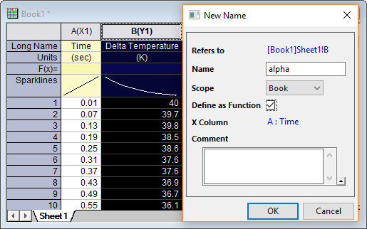
Führen Sie das folgende Skript im Skriptfenster aus, um den interpolierten Y-Wert bei X = 0,15 zu erhalten.
alpha(0.15,spline)=;
Jetzt fügen wir zwei weitere XY-Spalten hinzu und füllen die Spalte col(C) mit X-Werten, die wir interpolieren/extrapolieren möchten, und definieren sie als den Bereich “beta”.
Geben Sie in F(x) = von col(D) folgende Formel ein:
alpha(beta);
um sie mit den interpolierten/extrapolierten Y-Werten aus col(C) zu füllen.
- 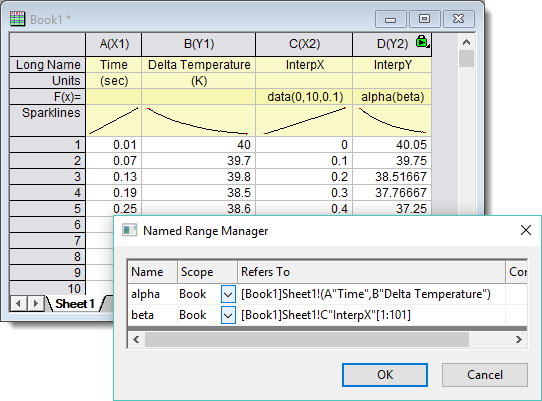
|
|
Vermeiden von Konflikten bei Bereichen mit Namen:- Beim Duplizieren eines Blatts: Bereiche mit Namen auf Blattebene werden dupliziert. Bereiche mit Namen auf Mappen- und Projektebene werden nicht dupliziert.
- Beim Duplizieren einer Mappe: Bereiche mit Namen auf Mappen- und Blattebene werden dupliziert. Bereiche mit Namen auf Projektebene werden nicht dupliziert.
- Beim Ziehen von Blättern zwischen Mappen: Im Fall des Duplizierens eines Bereichs mit Namen auf Mappenebene wird nur der benannte Bereich der Zielmappe beibehalten.
- Beim Anhängen eines Projekts: Im Fall des Duplizierens eines Bereichs mit Namen auf Projektebene, wird nur der benannte Bereich des Projekts beibehalten, an das angehängt wird, und der benannte Bereich im Projekt, das angehängt wird, verworfen.
|
Mit Formelleiste
- Markieren Sie eine einzelne Zelle oder Spalte im Arbeitsblatt.
- Wählen Sie im Menü Ansicht: Formelleiste, um die Formelleiste einzuschalten.
- Geben Sie im Bearbeitungsfeld, das sich am weitesten links befindet, den Bereichsnamen ein, um einen Bereich zu definieren.
- 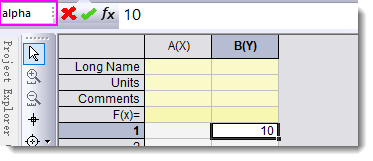
Hinweis:
- Der Umfang des benannten Bereich, der auf diese Weise hinzugefügt wurde, ist per Standard Mappe.
- Das Wählen eines existierenden Bereichs mit Namen in der Auswahlliste führt zu einem Sprung zu diesem Bereich.
- 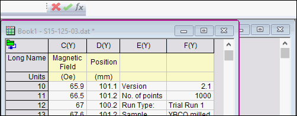
Mit Minisymbolleiste
- Wählen Sie eine einzelne gefüllte Zelle im Arbeitsblatt.
- Wählen Sie in der angezeigten Minisymbolleiste die Schaltfläche Name definieren . Der Dialog Neuer Name wird geöffnet.
 | Sollte es einen Text auf der linken Seite der ausgewählten Zelle geben, der die Benennungsregeln erfüllt, wird der Text automatisch als Bereichsname gewählt.
- 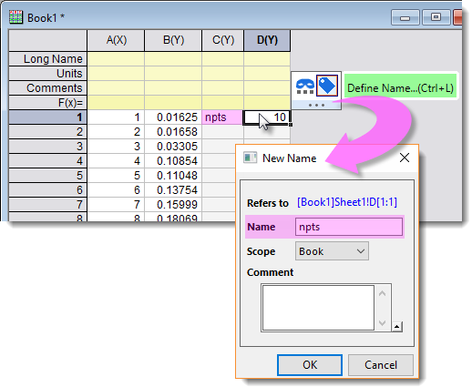
|
Mit Menü Namen verwalten
- Wählen Sie im Menü Daten: Namen verwalten (Strg+F3).
- Im aufgerufenen Dialog Namen verwalten können Sie einen benannten Bereich hinzufügen, modifizieren oder entfernen. Einzelheiten können Sie im nächsten Abschnitt nachlesen.
Bereiche mit Namen verwalten
Bereiche mit Namen verwalten
- Wählen Sie im Menü Daten: Namen verwalten (Strg+F3).
- Im Dialog Bereiche mit Namen verwalten können Sie
- Namen und Umfang ändern sowie Kommentare eines existierenden Bereichs bearbeiten.
- mit Rechtsklick einen neuen Bereich einfügen.
- mit Rechtsklick einen existierenden Bereich löschen.
- Mehrfachauswahl wird unterstützt: Drücken Sie die Strg-Taste und klicken Sie auf die Zeilen, um mehrere Zeilen auszuwählen; drücken Sie die Shift-Taste und klicken Sie auf die Zeilen, um einen zusammenhängenden Bereich auszuwählen.
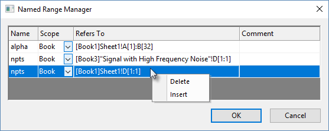
Anzeige in der Objektverwaltung
Die Bereiche mit Namen werden unter dem Arbeitsblatt, in dem sie definiert sind, aufgeführt.
- 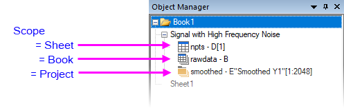
- Der zugewiesene Bereich wird neben dem Bereichsnamen angezeigt.
- Das Symbol des Bereichs mit Namen weist auf den Umfang hin.
- Ein einzelner Klick auf einen Bereich mit Namen hebt den zugewiesenen Bereich im Arbeitsblatt hervor.
- Ein Doppelklick öffnet den Dialog Bereiche mit Namen verwalten, wobei der Bereich hervorgehoben ist.
Bereiche mit Namen in Beschriftungszeilen verwenden
Ein benannter Bereich kann für Zellen in Datenzeilen oder Spaltenbeschriftungszeilen (Headerzeile) definiert werden. Das Verwenden von Bereichen mit Namen in Beschriftungszeilen ist nützlich in folgenden Anwendungen:
- Spalten-/Zellenberechnungen: Bereiche mit Namen können in Werte setzen oder beim Definieren einer Zellenformel verwendet werden.
- Referenzlinien definieren: Bereiche mit Namen können im Dialog Referenzlinien verwendet werden, wenn Werttyp auf Ausdruck oder Ausdruck gesetzt ist.
- Ein Funktionsdiagramm definieren: Bereiche mit Namen können beim Definieren eines Ausdrucks für ein Funktionsdiagramm verwendet werden (z. B. für 2D-Funktionsdiagramm).
| Beachten Sie den Umfang, wenn Sie Ihren Bereich mit Namen definieren. Wenn Sie zum Beispiel einen Bereich mit Namen nur innerhalb bestimmter Blatt- oder Mappenberechnungen verwenden möchten, können Sie den Umfang auf Blatt oder Mappe beschränken. Auf diese Weise können Sie den gleichen Namen in einem anderen Blatt bzw. einer anderen Mappe zu verwenden. Um einen benannten Bereich jedoch in einem Projekt durchgehend zu verwenden -- wie Sie das bei Referenzlinien oder Funktionsdiagramme tun müssten --, müssen Sie Umfang = Projekt setzen. Sie können den Umfang eines Bereichs mit Namen immer mit Hilfe von Bereiche mit Namen verwalten ändern. |
Schnelltutorial
| In diesen OriginLab-Blogeinträgen finden Sie weitere Beispiele zur Verwendung:
|
Unten ist eine einfache Erstellungsgeschichte einer Analysevorlage mit benanntem Bereich dargestellt.
- Öffnen Sie eine neue Arbeitsmappe. Wählen Sie im Menü Daten: Mit Datei verbinden: Text/CSV, um die Beispieldaten <EXE-Ordner>\Samples\Signal Processing\Signal with High Frequency Noise.dat mit Standardeinstellungen zu importieren.
- Klicken Sie auf das Konnektorsymbol
 und aktivieren Sie Importierte Daten beim Speichern ausschließen im Kontextmenü.
und aktivieren Sie Importierte Daten beim Speichern ausschließen im Kontextmenü. - Fügen Sie zwei neue Spalten, col(C) und col(D), hinzu. Geben Sie in C1 den Text
npts ein. Geben Sie in D1 die Zahl 10 ein. Klicken Sie auf D1. Wählen Sie in der angezeigten Minisymbolleiste die Schaltfläche Name definieren . - Im Dialog Neuer Name wird “npts” automatisch in das Bearbeitungsfeld Name gefüllt. Klicken Sie auf OK.
- 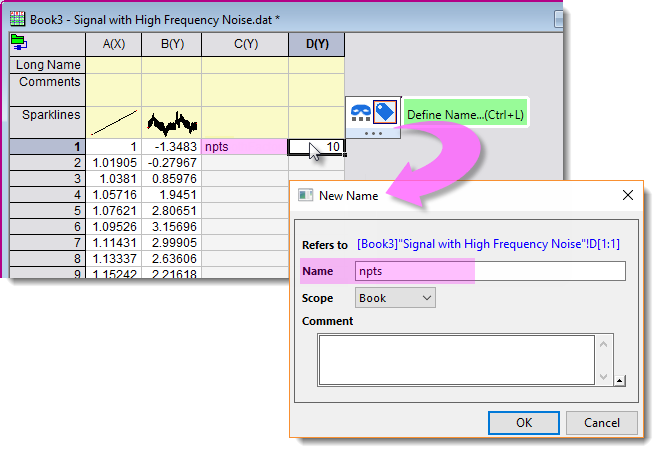
- Markieren Sie col(A) und col(B). Wählen Sie im Menü Analyse: Signalverabeitung: Glätten. Setzen Sie im Dialog die Option Neuberechnen auf Auto. Geben Sie npts in Punkte des Fensters ein.
- 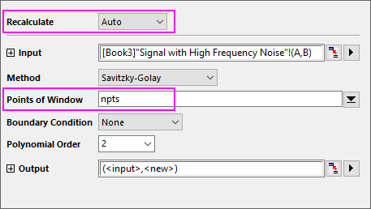
- Speichern Sie diese Mappe als eine Analysevorlage über das Menü Datei: Arbeitsmappe als Analysevorlage speichern.
- 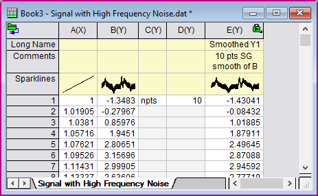